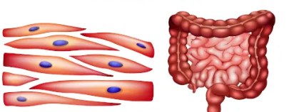

Os músculos são essenciais para o funcionamento do corpo humano e de outros animais, pois permitem a realização de uma variedade de ações, desde movimentos simples, como piscar os olhos, até atividades mais complexas, como correr ou levantar objetos pesados.
Os músculos são compostos por fibras musculares, que por sua vez são compostas por proteínas contráteis, como actina e miosina. Quando estimuladas pelo sistema nervoso, essas fibras musculares se contraem, resultando em movimento. Existem três tipos principais de músculos no corpo humano
Músculos esqueléticos
São os músculos ligados aos ossos por tendões e são responsáveis pelos movimentos voluntários do corpo. Eles permitem que realizemos atividades como andar, correr e levantar objetos.
Músculos lisos
Encontrados nas paredes de órgãos internos, como o estômago, intestinos e vasos sanguíneos. Eles executam movimentos involuntários e controlam funções como a digestão e a circulação sanguínea.
Músculos cardíacos
O coração é composto por músculo cardíaco, que é um tipo único de músculo. Ele se contrai de forma rítmica para bombear sangue pelo corpo e possui propriedades intermediárias entre os músculos esqueléticos e lisos.
Manter uma boa saúde muscular é importante para a funcionalidade geral do corpo, a mobilidade e a força. O exercício físico regular, uma dieta equilibrada e cuidados gerais com a saúde são fundamentais para manter a saúde dos músculos.